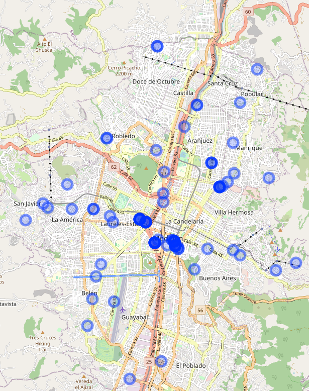

Incidente viales
Índice
Recomendaciones
- El procesamiento del archivo original en formato excell no es muy cómodo.
- Al no existir metadatos es necesario suponer los tipo de las columnas.
- los formatos de fecha en excel al ser leídos en R pueden introducir errores.
- Es preferible un formato abierto y plano como CSV.
- Adicionalmente se recomienda crear una tabla complementaria de metadatos, con los nombres y tipos de columnas, versión del archivo, enlace a versión anterior, responsable del archivo, fuente de los datos, número de registros. De esta manera es posible leer el archivo de datos sin equívocos que puedan ser generados por suposiciones sobre los datos.
Visualización de los datos en un mapa
library(tidyverse) library(readxl) library(httr) library(leaflet)
PROCESA DIRECTAMENTE DESDE URL ARCHIVO EXCELL #
binary_data <- GET("https://www.medellin.gov.co/movilidad/cifras-estudios/finish/3902-cifras-de-incidentalidad-diaria/334375-victimas-fatales-por-incidentes-viales-2020") %>% httr::content()
Archivo temporal para construir con datos binarios
excel_file <- tempfile("smtt_med_file") zz <- file(excel_file, "wb") writeBin(binary_data, zz) ## Escribe datos binarios en archivo temporal close(zz)
Lee archivo de excel como datos tabulares
tdata <- read_excel(path = excel_file,1) colnames(tdata) <- as.character(tdata[2,]) Asigna nombres de columnas tdata <- tdata[-c(1,2),] Elimina filas adicionales sin información
tdata <- read_tsv("./data/iv_2020_120.csv")
tdata %>% group_by(lubridate::month(FechaIncidente)) %>% summarise(n()) tdata %>% group_by(`Dirección`) %>% summarise(cnt=n()) %>% arrange(desc(cnt))
- Geocoder de OSM (nominatim) -> https://nominatim.org/ https://nominatim.openstreetmap.org/ui/search.html
formato nominatim: Medellín, Valle de aburrá, Antioquia, 0500, CL -> Calle 71 CR -> Carrera 65
nominatim_pretext <- "Medellín, Valle de aburrá, Antioquia, 0500, " tdata$osm_search_term <- tdata$`Dirección` %>% str_replace("\\b[C|c][L|l]\\b","Calle") %>% str_replace("\\b[C|c][R|r]\\b","Carrera") %>% str_replace("\\b[T|t][R|r]\\b","Transversal") %>% str_replace("[D|d][G|g]","Diagonal") %>% str_replace("entre","") %>% str_replace(" y .*","") %>% str_replace(" - .[0-9]*","") %>% paste0(nominatim_pretext,.) API query -> https://nominatim.org/release-docs/develop/api/Search/ nominatim_q_template <- "https://nominatim.openstreetmap.org/search.php?q=%s&format=json&limit=1"
Hacer map de los todos los elementos y retornar lat y lon
geocoding <- map(sprintf(nominatim_q_template,tdata$osm_search_term), function(q) { r <- GET(q) %>% httr::content() %>% map(function(s) { names(s) tibble( lat = s[[6]], lon = s[[7]] ) }) }) %>% enframe %>% unnest(cols = c(value)) tdata$lat <- "" tdata$lon <- "" tdata[geocoding$name,c("lat","lon")] <- map_df(geocoding$value,`[`,c(1,2))
Pinta mapa
options(browser="/usr/bin/brave") leaflet(tdata) %>% addTiles() %>% addCircleMarkers(~as.numeric(lon), ~as.numeric(lat))

Figura 1: Mapa con Incidentes Viales
Otra opciones para geocodificar las direcciones
- Geocoder de la Alcaldía -> https://www.medellin.gov.co/MAPGISV5_WEB/mapa.jsp?aplicacion=0
https://www.medellin.gov.co/servicios/GEOCOD_WEBP/processFormField.do?accion=4&nombreArchivoExcel=/pub/aplicaciones/secretaria_ti/tempGeocod/iv_2020_120.xlsx&hoja=iv_2020_120 https://www.medellin.gov.co/mapas/rest/services/ https://pro.arcgis.com/es/pro-app/tool-reference/geocoding/geocode-addresses.htm https://github.com/cengel/ArcGIS_geocoding https://developers.arcgis.com/rest/services-reference/geocode-service.htm
- Geocoder de google